It has snowed in many places lately. While you enjoy the view, you can also take photos with your phone or camera. Here are a few tips for shooting snow scenes.
● Tips for shooting snow scenes
When you shoot snow, get the exposure right, or the photo will look gray and dull.
So, to get the white look of snow, use the rule of 'add for white, subtract for black,' and raise the exposure a little.
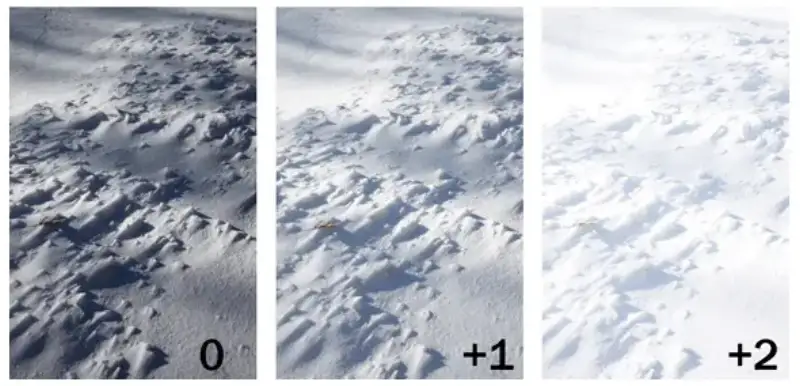
▲ Different exposure settings give different snow-scene results
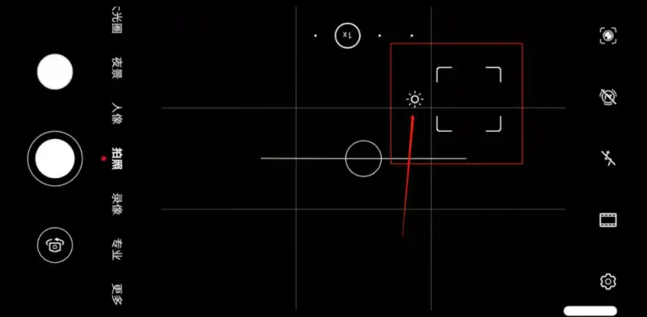
▲ On a phone, drag the little sun to adjust the exposure of the frame directly.
What to shoot in the snow
Choose a theme to set a mood of beauty.
1. Shoot streets
On the street you walk every day, if children happen to be playing, press the shutter and record this everyday warmth of life.
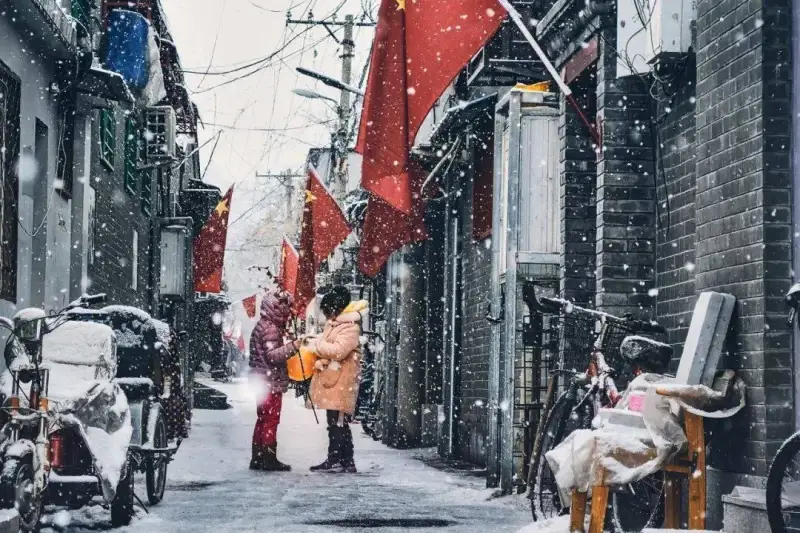
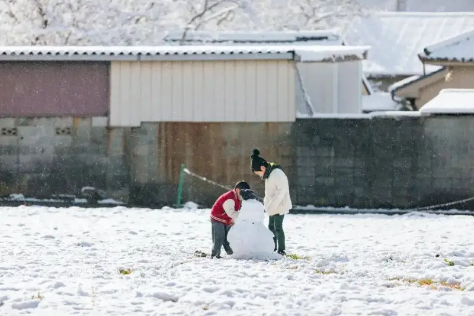
When you pass a footbridge or a path in a park, crouch down to shoot. Turn on the wide-angle lens of the phone, and use the curved line of the road as a leading line in your composition. You will get a snow scene with depth.
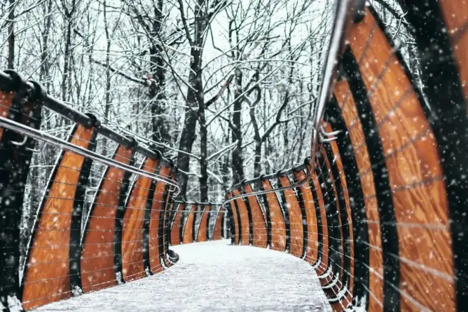
Shoot at night. Focus on a street lamp, then lower the exposure. When the dim yellow light meets the snow, the frame looks warmer.
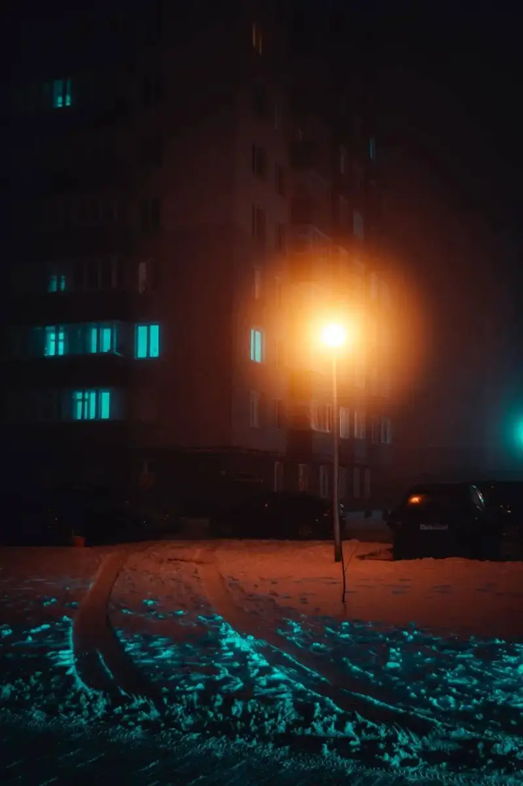
Surprise
2. Shoot a lake
If you are in the Jiangnan region, winter lets you watch snowflakes fall by the lake. Everything is quiet and beautiful, like a traditional Chinese ink painting.
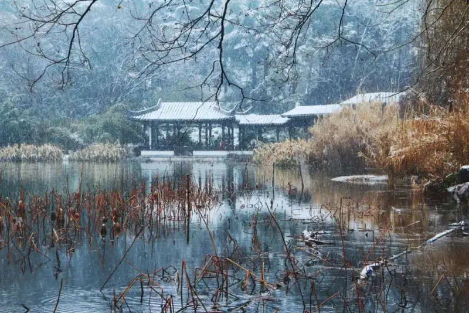
3. Shoot eaves
When it snows, the eaves get covered in a thick layer of snow. Try making the eaves the main subject, and use a composition with plenty of empty space.
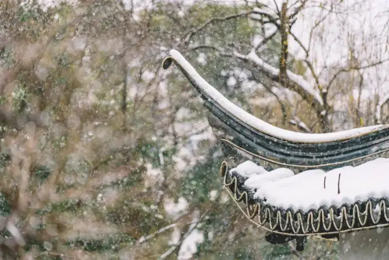
Especially eaves with character have more charm.
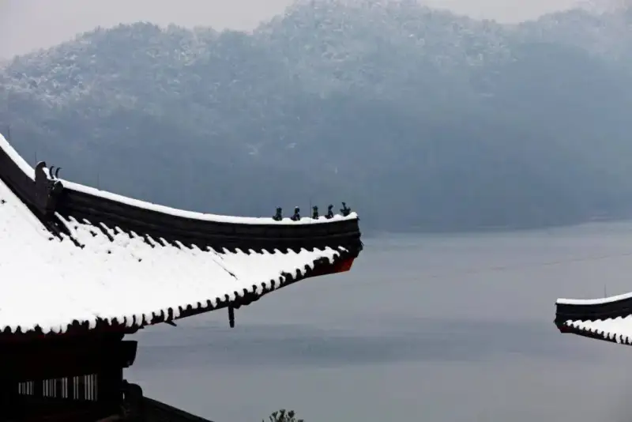
4. Shoot color
One of the best ways to make snow stand out is to pick a bright background, red or black, yellow or blue. The contrast gives the image a stronger visual impact.
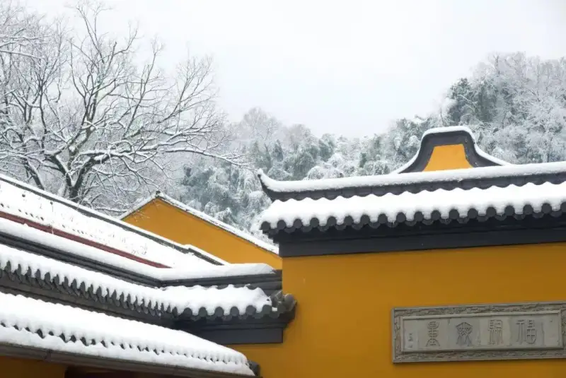
5. Shoot details
After many big scenes, you can also move in for close-ups of small details. Making the snow look 'unfamiliar' is especially fun.
Flower buds waiting to open in the snow, branches weighed down by snow, and many small details we often miss are all worth rediscovering with the phone lens.
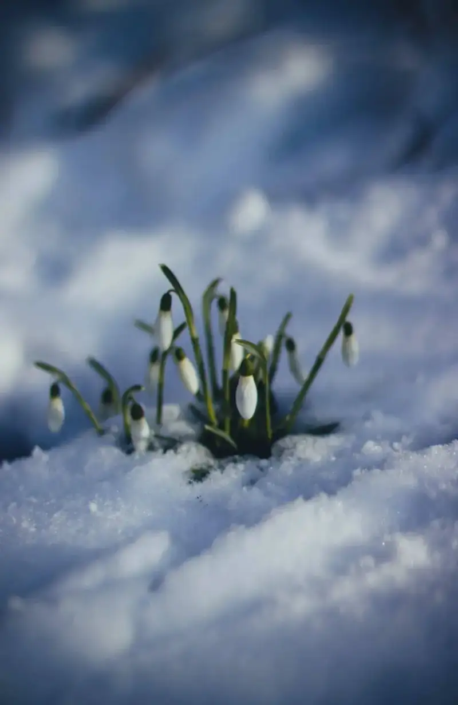
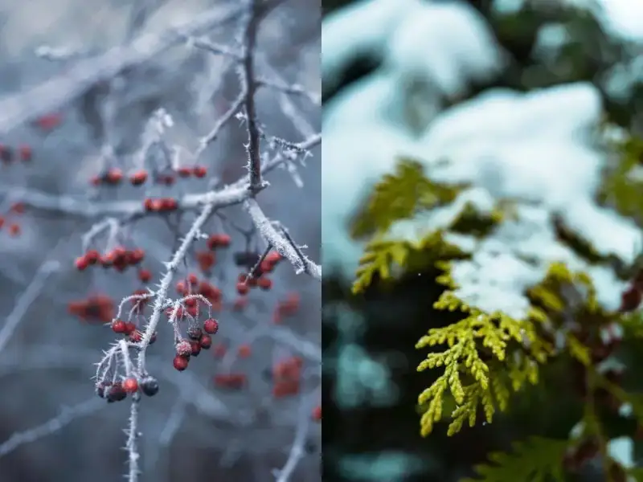
6. Shoot out the window
Looking out a window, the snow scene has a beauty of its own. Use the window to build a frame-within-a-frame composition, and the image looks steady and elegant.
Bright
7. Shoot people
On a snowy day, besides the snow scene, you can also shoot snowy portraits.
Bring an umbrella or a few small props, turn on wide-aperture mode, and shoot snowy portraits. It is simply beautiful.
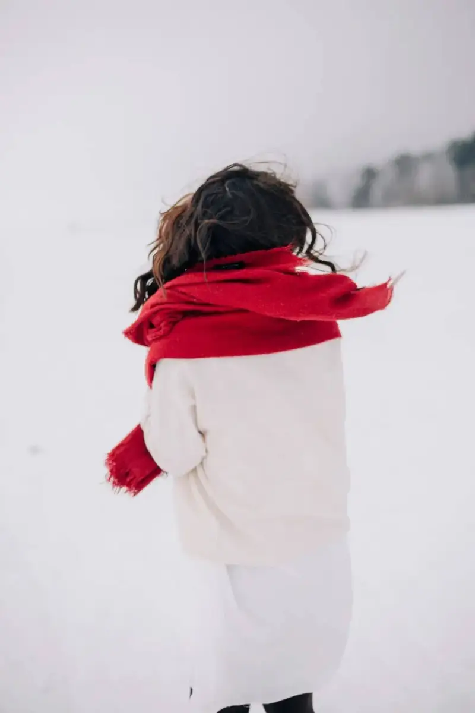
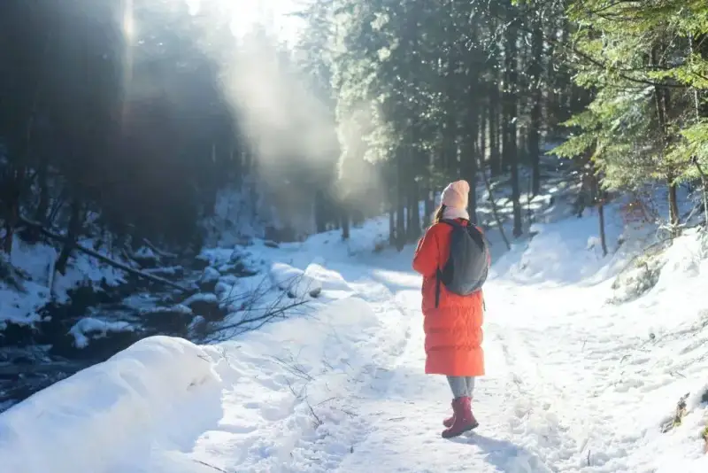
These are the themes you can shoot in snowy weather. Go and try them out.